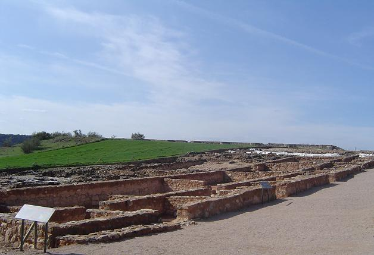
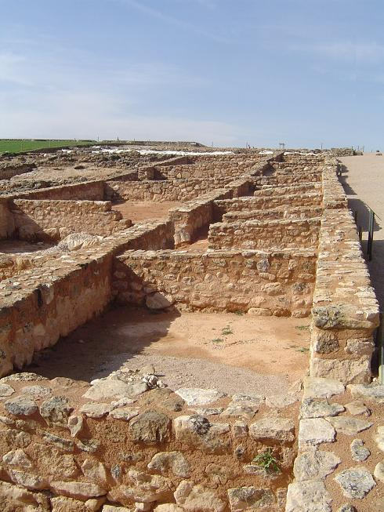
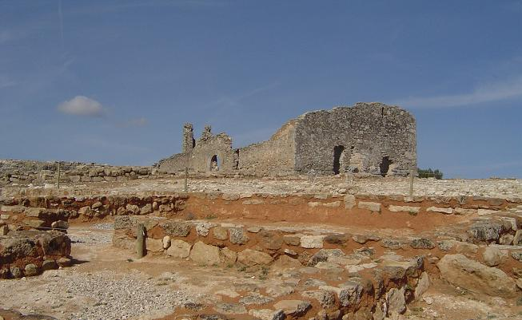
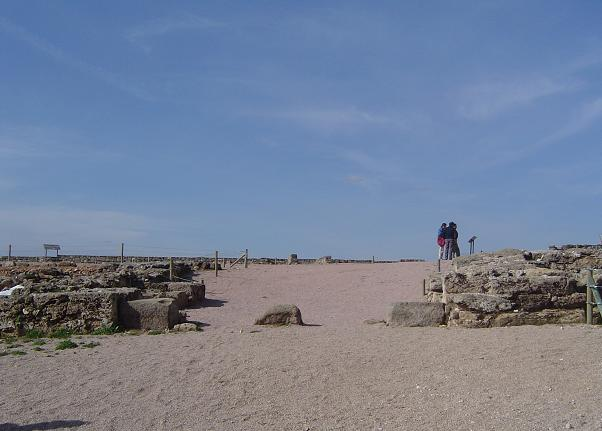
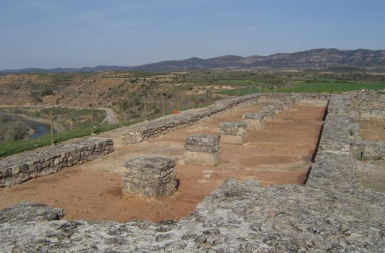

|
R E C O P O L I S
|
|
En
Zorita de los Canes, hallamos la ciudad de
Recópolis. Yacimiento de la
única ciudad Visigoda de nueva planta, conocida, con una extensión de 30 hectáreas. No podemos asegurarlo con toda seguridad pero Zorita de los Canes se ha identificado con el castro celtíbero de Contrebia Leucada. Posee restos de un castro celtibero, donde se han hallado restos quemados que se identifican con los castros incendiados por Tulio Sempronio Graco en el 179 a.e.c. en su conquista de la Hispania. Y supuestamente fue sitiado y arrasado por el ejercito romano. También se ha hallado una villa tardorromana y restos de vasijas árabes. Han aparecido pocos restos materiales, por lo que los arqueólogos suponen que el asentamiento fue abandonando poco a poco y los habitantes se llevaron consigo sus pertenencias. Muchas son las teoría sobre Recópolis; Suponemos que la actual Recópolis fue fundada por el rey Orospedano Ambilote ayudado por los bizantinos y su idea de restaurar el imperio romano, entre los años 350 a 450. El abad Eutropio se refugió en ella durante los años de persecución religiosa y militar 573 a 577, huyendo de Arcavica. En el 577 Leovigildo sometió a la ciudad y entre el 578 y 582 la rehabilita y la mejora fortificándola, ajardinándola y cuñando monedas. Y ya en el 609 Recaredo, la menciona como ciudad fundacional visigoda, celebra el III Concilio de Toledo y acuña moneda. Pero no descartamos que Recópolis fue construida por el rey Godo Leovigildo en el año 578, en honor de su hijo Recadero, heredero al trono del reino de Toledo. El nombre de Recópolis se ha traducido como : "la ciudad del rey" o " la ciudad de Recaredo". El yacimiento se halla en Guadalajara, en el termino municipal de Zorita de los Canes, sobre el Cerro de la Oliva. Desde este promontorio el asentamiento, domina la vega del río Tajo, cuyo meandro rodea la ciudad por el norte, sur y oeste. En este privilegiado emplazamiento, los Visigodos ejercían la caza, la pesca, la equitación y la cetrería que tanto les apasionaba. Tras la caída del Imperio, los visigodos fueron el motor socioeconómico de la península. La agricultura y la ganadería eran la base de la economía. El máximo esplendor de la ciudad se desarrollo entre los siglos VI al XI. EL yacimiento de Recópolis posee varios lienzos de muralla realizada con sillarejo y jalonados con torres cuadradas. La muralla tiene una anchura de 2 m. Hasta el momento la única puerta descubierta es la localizada en la zona oeste. La iglesia es única en la península, de planta cruciforme y ábside semicircular. También destaca la zona palatina. Es una ciudad única en Europa. La basílica se construyó en dos fases diferenciadas, en su origen se construyó una modesta iglesia romana rural de siglo IV o principios del V en concordancia con la población hispano romana que habitaba el asentamiento. Posteriormente la iglesia se rehabilitó convirtiéndola en una basílica y el asentamiento paso a ser una ciudad. También destacamos los restos arqueológicos de sus alrededores, como los restos de una calzada romana que discurren hacia Buendía, el castillo del siglo XII y la iglesia de san Juan bautista en cuyo interior se halla una pila bautismal visigoda.
|
| La ermita es el edificio más moderno del yacimiento, fue construida en el siglo XV, aprovechando los restos de una iglesia románica del S XII, que a su vez se levanto sobre los restos de la iglesia visigoda edificada a finales del siglo VI. Hasta el siglo XVI fue un lugar de romería en la que participaban los pueblos de la zona cuyos habitantes recordaban la existencia de una ciudad antigua cuyas ruinas todavía se adivinaban en el terreno. | ||||||
|
El templo más importantes de Recópolis, situado en el lado este de la plaza, tenia planta cruciforme inscrita en un rectángulo, y una habitación bautismal en su esquina noroeste. Estaba integrado en el conjunto palatino. La calidad de sus sillares, sus pavimentos similares a los del palacio y la variedad de sus elementos decorativos, dan idea de la importancia de esta construcción.
|
|
La ciudad de grandes dimensiones fue la única de nueva planta que se levantó en aquella época. Se construyó con esplendidos edificios y siguió un plan urbanístico jerarquizado que la dividía en varias zonas, el palacio, la zona comercial, la zona de viviendas, la muralla y los arrabales. |
|
|
|
|
Recópolis se convirtió en una ciudad muy dinámica, con sus transformaciones y cambios durante época visigoda (S VI-VIII) y de la primitiva época andalusí (S VIII- mitad IX). A mediados del S IX, ya abandonada la ciudad, sus restos sirvieron como cantera para construir la nueva ciudad andalusí de Zorita. A finales del S XII, ya consolidada la conquista cristiana, se asienta en lo alto del cerro una comunidad de campesinos que aprovecha las ruinas visigodas y construyen la iglesia y sus viviendas.
 |
 |
|

|
|
Vivienda visigoda.
Primera época visigoda: la construcción de este edificio se fecha en la
contracción de la ciudad a finales del S VI. De esta época se conservan
las cimentaciones y los zócalos de los muros de una casa alrededor de un
patio, parcialmente porticado, destacando el cuerpo central situado al N.E.
formado por dos habitaciones que configuran el espacio principal de la vivienda. Segunda época visigoda: hacia mediados del S VII y dentro de los cambios que se producen en Recópolis en esta fecha, la vivienda se transforma reduciendo la habitación. Estos cambios afectan principalmente al cuerpo central, donde la habitación menor se transforma en establo y la vivienda queda reducida únicamente a la habitación mayor. La calle principal de la ciudad estaba formada por dos niveles, necesarios para salvar la pendiente natural, de ellos el superior servia como espacio para transeúntes. Por su proximidad con el palacio y su relación la zona comercial y una cisterna para el aprovechamiento de agua, debía ser un punto de encuentro de los habitantes de la ciudad. A ambos lados de la calle se levantaban edificios de carácter comercial y artesano. Albergaban nueve tiendas y sus correspondiente talleres, alguno de los cuales, según los restos arqueológicos hallados, estuvo dedicado a a la elaboración y comercialización de objetos de vidrio y orfebrería. En la margen derecha de la calle se sitúan los restos de una cisterna de época visigoda, que formaba parte del sistema de suministro de agua de la población. Estaba protegida y se accedía a través de otra una habitación contigua, pavimentada con losas de piedra, abierta a la calle. Taller vidrio. En este espacio del edifico comercial se ha documentado la existencia de un taller de producción de vidrio soplado. Los restos de un horno, así como la gran cantidad de fragmentos de vidrio, probaturas y escorias, son testimonios de la importancia de este tipo de producción tuvo en Recópolis en la época visigoda. El taller se localizaba en la habitación rectangular situada en la zona posterior. Las dos estancias próximas a la entrada, pudieron tener la función de tienda para comercializar los objetos fabricados. A mediados del S VII la ciudad de Recópolis sufrió cambios en su estructura urbana y en la función de algunos de sus edificios y espacios colectivos. En esta zona de la ciudad y como consecuencia de estos cambios, parte de los espacios comerciales se transforman en zonas de vivienda y algunas calles se cierran con nuevas construcciones. Se levantó sobre una calle anterior y su construcción obligo a canalizar mediante una atarjea un antiguo desagüe para evacuar las aguas procedentes de la zonas superior y dirigirlas a un pozo escavado bajo la plataforma superior de la calle principal.
|
|
 |
Sobre el espacio ocupado por una de las tiendas de época visigoda, se
construyó a principios de la época andalusí, en el S VIII, una herrería.
Testimonio de esta son los muros, así como la cimentación del horno. Este horno
de planta rectangular conserva en su parte central la cámara de
combustión. La herrería servia para cubrir las necesidades de la población
derivadas de la demanda de utensilios de hierro utilizados en las actividades
agrícolas y cotidianas. En época visigoda se levantó una puerta monumental de acceso al conjunto palatino, de la que solo se conserva su basamento. Estaba construida con sillares recubiertos con un enlucido de cal, y tenia una altura aproximada de 7 metros. En época andalusí la puerta se cerro para proteger la entrada al recinto porticado. De esta reforma den testimonio los sillares que sirvieron como topes de los batientes y para albergar los huecos de los goznes. |
|
|
|
|
|
|
Palacio.
El conjunto de edificaciones palatinas se situaba en la zona superior de
la ciudad organizado alrededor de una gran plaza. Este conjunto de
edificios tenia, además de su uso como residencia de altos dignatarios,
una función administrativa. En ellos se localizaban todas las dependencias
para la administración y el gobierno de Recópolis y su territorio. Los estudios arqueológicos han constatado que estos edificios contaban con dos plantas. La superior era la de mayor relevancia, tal y como refleja que asociaba a ella se encontraran destacados restos decorativos, así como su pavimento, realizado con un hormigón de origen romano, el opus signium, cuidadosamente acabado. La alineación de los machones, situada en el centro de estos edificios, documenta la base de la estructura que sustentaba dicha planta. |
|
|
|
|
 |
En época andalusí, , parte del palacio de la época visigoda, ya en ruina,
sufre una profunda transformación al convertirse en una fortaleza que se
construirá sobre los restos de la mitad occidental del edificio de mayores
dimensiones. De estas reformas dan testimonio los muros exteriores que se
reconstruyen y refuerzan; las compartimentaciones del interior, la
construcción de una torre en el extremo occidental o el cerramiento de las
dos puertas de época visigoda. La fortaleza protegía un recinto al que se
accedía a través de la puerta monumental. ahora dotada de un cerramiento. En época andalusí el espacio utilizado anteriormente como vivienda, se convierte en una zona productiva. En las excavaciones han aparecido fosas de gran tamaño que se vinculan con la elaboración o transformación de materiales. De esta época se ha documentado un horno de cal, compuesto por un pasillo de carga de lecha y una gran cámara de combustión. En su interior se excavó un extracto de madera carbonizada, un extracto de cal muerta y piedra calizas quemadas. |
|
|
|
Durante las dos fases que documentan la época andalusí, de principios del S VII a principios del S IX, continuo la vida de la ahora dominada Madinat Raqqubal. Las excavaciones atestiguan este hecho, ya que se han documentado los distintos espacios de esta época. Para la primera fase de época andalusí, un ejemplo lo constituyen las reformas realizadas en el antiguo edificio comercial. Se construyeron muros que compartimentan las nuevas viviendas y que sustituyen a los que estaban arruinados de la fachada original. Asociados a estos espacios se localizan hogares de cocina y materiales andalusies que testimonian su uso como viviendas.
|
|
Hacia finales del S VIII y principios del S IX se documenta una segunda fase
andalusí que produjo grandes cambios en el paisaje urbanístico de la ciudad,
ahora denominada Madinat Raqqubal. Una de estas transformaciones esta
relacionada con la profusión de conjuntos de silos asociados a las nuevas
viviendas para el almacenaje de grano, que se obtenía de una intensa explotación
agraria del territorio. Estos silo, generalmente asociados a las nuevas
viviendas, se localizan en espacios ocupados por antiguas construcciones de
época visigoda. Eran estructuras escavadas en el nivel geológico e
impermeabilizada con un estuco de arcilla que se tapaban con una losa de piedra
circular una vez introducido el cereal.
|